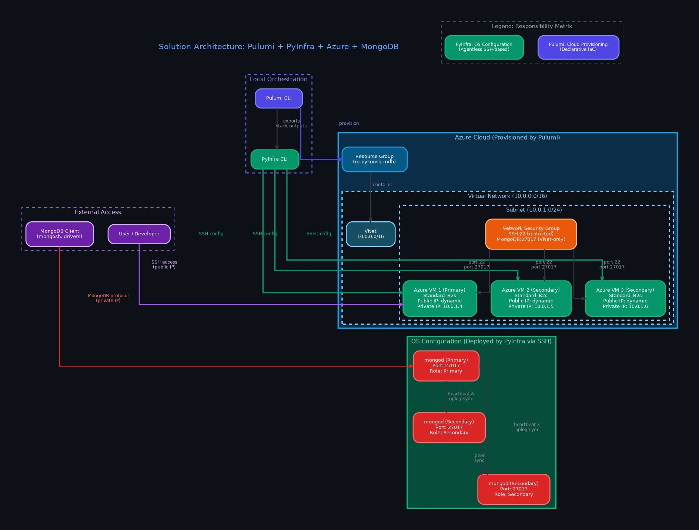

Orchestrating Distributed Cloud Infrastructure with Pulumi and PyInfra
A Python-First Paradigm for Provisioning and Configuration
Senior Consulting Engineer at MongoDB | Microsoft MVP
Presenter Profile
Piti Champeethong
Senior Consulting Engineer at MongoDB | Microsoft MVP
Over 20 years of experience in software development and database application design. MongoDB User Group Leader in Thailand.
- Expertise in MongoDB, Azure, Python, and CI/CD pipelines.
- Active speaker at technology conferences and user groups.
Connect with Me
Social & Professional Profiles
Follow my developer community contributions, research codebases, and technical blog updates:
- LinkedIn: linkedin.com/in/pitichampeethong
- GitHub: github.com/ninefyi
- MVP Profile: Piti Champeethong MVP Page
Presentation Roadmap
The structured journey through Python-native cloud automation:
Slides 4-6
The Paradigm ShiftUnderstanding tool sprawl and the IaPy vision.
Slides 7-10
Tooling FoundationsCore features of Pulumi, PyInfra, and comparisons.
Slides 11-14
Architecture & FlowSolutions layout, topology diagrams, and handoff flows.
Slides 15-17
Code Deep DiveLive Python code for Pulumi, inventory, and deployment.
Slides 18-20
Clustering & SecurityDeploying MongoDB, sync rules, and secrets handling.
Slides 21-23
Production PatternsCI/CD workflows, common traps, and resources.
The DevOps Paradox
Tooling Sprawl vs. Developer Velocity
Modern cloud architectures frequently demand a massive array of specialized tools to provision, manage, and scale clusters. This creates significant operational overhead:
- Fragmented Workflows: Tool boundaries force developers to switch contexts constantly.
- Debugging Mismatch: Provisioning and configuration errors report through different channels.
- High Learning Curve: Teams must learn custom syntax rules, CLI tools, and state architectures.
The Friction Point
Rather than writing product code, DevOps specialists spend their time translating state values, credentials, and network configurations between incompatible markup formats.
The "Language Soup" Problem
Traditional DevOps stacks force developers to declare and write infrastructure across multiple, incompatible formats:
Static Templates
HCL (Terraform) or JSON (CloudFormation) defining cloud resource definitions.
YAML Sprawl
YAML files (Ansible, Helm) mimicking code constructs (loops, conditionals) via custom template layers.
Language Isolation
Application logic in Python/Go, completely separated from the configuration codebase, losing type safety.
The Result: No IDE autocomplete, hard-to-test code blocks, and constant runtime syntax errors.
The Infrastructure As Python (IaPy) Vision
Unifying Provisioning and Configuration
We propose a shift to a single, powerful general-purpose programming language for the entire lifecycle of your infrastructure:
- Native Logic: Write loops, conditionals, and classes directly without markup workarounds.
- Testing Ecosystem: Run standard python test suites (e.g. pytest) to assert stack properties.
- Robust Tooling: Benefit from the full Python ecosystem (linters, formatters, code refactoring).
Why Python?
Python acts as the bridge. It is already the standard for scripting, AI, data science, and cloud management APIs. Unifying infrastructure code in Python eliminates cognitive transitions.
State Management vs. OS Mutation
Dividing Responsibilities in Infrastructure Code
A clean architecture separates the creation of cloud resources from the installation of configuration details inside the OS:
1. Cloud Provisioning (Pulumi)
Focuses on cloud API lifecycle management.
- Creates networks, routers, firewalls, and VM instances.
- Tracks resource associations, states, and dependencies.
- Calculates structural changes (plans) declarative-style.
2. OS Configuration (PyInfra)
Focuses on mutating host system internals.
- Installs runtime environments, libraries, and binaries.
- Injects dynamic configuration templates.
- Coordinates service restarts and clustering logic.
Introducing Pulumi
Declarative Cloud Provisioning in Python
Pulumi allows developers to declare cloud resources in general-purpose languages like Python, while maintaining full state tracking:
- Dependency Graph: Generates resource relations implicitly based on variable assignments.
- State Locking: Secures and tracks state to protect active infrastructure from drift.
- Azure Native: Maps directly to Azure API calls, providing immediate access to new cloud features.
Pulumi Lifecycle:
- Run `pulumi up`
- Pulumi executes the Python script.
- Compiles an abstract resource model.
- Asserts changes against state.
- Applies differences to the cloud provider.
Introducing PyInfra
High-Speed, Agentless Server Orchestration
Key Characteristics
PyInfra coordinates deployment changes inside target servers without requiring heavy architectures:
- Agentless Model: Connects remotely via SSH; does not require target software.
- Fact-Based: Gathers current OS state to determine if action is required.
- Asynchronous: Runs multiple server changes in parallel, optimizing execution times.
Unlike Ansible, which requires heavy YAML translation engines, PyInfra scripts compile into pure shell commands directly inside Python. This makes execution significantly faster and provides instant code debugging capabilities.
The Paradigm Battle
Comparing Python-First Automation with Legacy Stacks
| Feature | Python-First (Pulumi + PyInfra) | Traditional Stack (Terraform + Ansible) |
|---|---|---|
| Primary Language | Python (Full programming logic) | HCL + YAML (Markup / Custom syntax) |
| Execution Engine | Native Python scripts / fast SSH | Custom Go parser / heavy Python runtime |
| Metadata Exchange | Direct programmatic outputs | Static inventory lists / text parsing |
| Type Safety & Autocomplete | Supported natively in IDEs | Varies, requires specialized plugins |
| Testing Framework | Standard libraries (`pytest`) | Custom testing utilities |
Solution Architecture
Pulumi + PyInfra + Azure + MongoDB Distributed System

Click to expand
Complete overview: Pulumi provisions Azure infrastructure → PyInfra deploys MongoDB replica set via SSH configuration
Repository Structure
Infrastructure as Python Project Layout
├── .devcontainer/
│ └── devcontainer.json
├── .gitignore
├── index.html
├── styles.css
├── slides.js
└── demo/
├── README.md
├── pulumi/
│ ├── Pulumi.yaml
│ └── __main__.py
└── pyinfra/
├── inventory.py
├── deploy.py
└── templates/
└── mongod.conf.j2
Component Roles
- .devcontainer: GitHub Codespaces development setup.
- .gitignore: Excludes OS files, venv, and local Pulumi state backups.
- pulumi/: Cloud resource code (VNet, security rules, and VMs).
- pyinfra/: Multi-server OS management tasks, configuration templating, and replication scripting.
Azure Cluster Topology & Solution
Visual Network and Deployment Specification
Target Configuration
- Nodes: 3 Azure VMs (`Standard_B2s` instance size).
- Database: MongoDB Community Version `8.0.23`.
- Replication: Automated syncing under replica set `rs0`.
- Security: Internal IP communications; port 27017 locked down inside VNet.
The Metadata Handoff Pattern
Connecting Provisioning Outputs directly to Configuration Inputs
Avoid managing static IP lists or text file inventories. The handoff pattern handles state exchange programmatically:
1. Export Stack Outputs
Pulumi registers VM attributes (Public IPs, Private IPs, user credentials) and exports them securely.
2. Dynamic Query
PyInfra queries the Pulumi CLI directly during initialization to fetch stack outputs.
3. Runtime Compilation
Host parameters are constructed dynamically inside Python memory without writing static files.
One single pipeline execution. No manual metadata entry.
Dynamic Host Discovery Workflow
How State Flows from Pulumi to PyInfra
Deploys VNet, NSG, and 3 VMs on Azure.
Pulumi outputs dynamic IP addresses and logins.
PyInfra executes stack output commands programmatically.
Hosts details are compiled into active connection list.
Code: Pulumi VM Provisioning Loop
Creating 3 Azure VMs with a Python for-loop
# Provision 3 Virtual Machines
vm_public_ips = []
vm_private_ips = []
for i in range(1, 4):
public_ip = network.PublicIPAddress(f"mongo-pip-{i}",
resource_group_name=resource_group.name,
public_ip_allocation_method="Static",
dns_settings=network.PublicIPAddressDnsSettingsArgs(
domain_name_label=f"pyconsg-mongo-{i}"
)
)
nic = network.NetworkInterface(f"mongo-nic-{i}",
resource_group_name=resource_group.name,
ip_configurations=[network.NetworkInterfaceIPConfigurationArgs(
name="ipconfig1",
subnet=network.SubnetArgs(id=subnet.id),
public_ip_address=network.PublicIPAddressArgs(id=public_ip.id),
private_ip_allocation_method="Static",
private_ip_address=f"10.0.1.{3 + i}"
)]
)
vm = compute.VirtualMachine(f"mongo-vm-{i}",
resource_group_name=resource_group.name,
hardware_profile=compute.HardwareProfileArgs(
vm_size="Standard_B2s" # 2 vCPUs, 4GB RAM
),
os_profile=compute.OSProfileArgs(
computer_name=f"mongo-node-{i}",
admin_username="azureuser",
),
# ... storage_profile, network_profile ...
)
vm_public_ips.append(public_ip.ip_address)
vm_private_ips.append(nic.ip_configurations.apply(
lambda configs: configs[0].private_ip_address
))
# Export outputs for PyInfra consumption
pulumi.export("vm_public_ips", vm_public_ips)
pulumi.export("vm_private_ips", vm_private_ips)
pulumi.export("ssh_user", "azureuser")
if has_password:
pulumi.export("ssh_password", ssh_password)Code: The Metadata Handoff
PyInfra dynamically reads Pulumi stack outputs
import json, os, subprocess
# Resolve pulumi dir relative to this script
_script_dir = os.path.dirname(os.path.abspath(__file__))
_pulumi_dir = os.path.join(_script_dir, "..", "pulumi")
# Query live Pulumi stack outputs — no static inventory files!
result = subprocess.run(
["pulumi", "stack", "output", "--json", "--show-secrets"],
cwd=_pulumi_dir, capture_output=True,
text=True, check=True, timeout=30,
)
outputs = json.loads(result.stdout)
_public_ips = outputs.get("vm_public_ips", [])
_private_ips = outputs.get("vm_private_ips", [])
_ssh_user = outputs.get("ssh_user", "azureuser")
# Build PyInfra host inventory dynamically
mongodb_servers = []
for i, public_ip in enumerate(_public_ips):
host_data = {
"ssh_user": _ssh_user,
"ssh_strict_host_key_checking": "no",
"private_ip": _private_ips[i],
"node_index": i,
"node_name": f"mongo-node-{i+1}",
"all_nodes": _private_ips,
"enable_mongodb_auth": enable_mongodb_auth,
}
if _ssh_password:
host_data["ssh_password"] = _ssh_password
else:
host_data["ssh_key"] = "~/.ssh/id_rsa"
mongodb_servers.append((public_ip, host_data))Code: Deploy & Configuration Template
PyInfra deploy script + Jinja2 mongod.conf template
# Install MongoDB 8.0.23 (pinned packages)
apt.packages(
name="Install MongoDB Community Edition 8.0.23 packages",
packages=["mongodb-org=8.0.23", "mongodb-mongosh"],
update=True, _sudo=True
)
# Deploy the mongod.conf template
files.template(
name="Configure MongoDB mongod.conf",
src="templates/mongod.conf.j2",
dest="/etc/mongod.conf",
user="root", group="root",
mode="644", _sudo=True
)
# Start and enable mongod service
server.service(
name="Restart and enable MongoDB service",
service="mongod",
running=True, enabled=True,
restarted=True, _sudo=True
)
# Init replica set on Primary node only
if host.data.node_index == 0:
members = [
{"_id": idx, "host": f"{ip}:27017"}
for idx, ip in enumerate(host.data.all_nodes)
]
server.shell(
name="Initialize replica set on Primary node",
commands=[rs_initiate_cmd],
_sudo=True
)storage:
dbPath: /var/lib/mongodb
systemLog:
destination: file
logAppend: true
path: /var/log/mongodb/mongod.log
net:
port: 27017
# Bind to localhost + VNet private IP
bindIp: 127.0.0.1,{{ host.data.private_ip }}
processManagement:
timeZoneInfo: /usr/share/zoneinfo
replication:
replSetName: "rs0"
{% if host.data.enable_mongodb_auth %}
security:
authorization: enabled
keyFile: {{ host.data.mongodb_keyfile_path }}
{% endif %}MongoDB Replica Set Deployment Pipeline
Task Steps executed concurrently by PyInfra
Install curl, gnupg, and update APT packages.
Add MongoDB 8.0 key and package repository list.
Install MongoDB Community Edition version 8.0.23.
Generate mongod.conf bound to local and private IP.
Start, enable, and reload the database service daemon.
Replica Set Clustering Mechanics
Idempotency and Primary Node Initialization
To establish the multi-node replica set, we must execute the initiation command from a single primary target to avoid replication conflicts:
- Primary Node Election: Node 0 (the first VM in host array) is designated as the setup node.
- Startup Delay: Add a delay to allow the database service to open ports before executing shell queries.
- Idempotency Assertions: Check if replication is active (`rs.status().ok`) to prevent errors on subsequent executions.
Replica Sync Steps:
- Primary node runs cluster configuration parameters.
- Secondary nodes receive instructions via internal IPs.
- Replication begins automatically on port 27017.
- Cluster status shifts to PRIMARY and SECONDARY.
Security & Secrets Management
Handling Credentials in Cloud Automation
Securing SSH access and inter-cluster communications is critical to prevent leaks:
SSH Key Authentication
Uses public SSH keys deployed dynamically to VM authorized_keys files, enforcing passwordless login.
SSH Passwords Option
Allows SSH password fallback. Passwords are set through Pulumi and retrieved by PyInfra using secure mechanisms.
KMS Encryption
Passwords and configuration parameters are encrypted as secrets using Pulumi's KMS encryption providers.
All secret parameters are automatically redacted from execution logs.
Enterprise Best Practices
Taking Infrastructure as Python to Production
1. Dry-Run Pipelines
Execute scripts in preview mode to verify actions before mutating cloud resources or server states:
- `pulumi preview`
- `pyinfra --dry`
2. Testing Infrastructure
Use testing frameworks to assert system states:
- Assert correct port binding.
- Assert security rule limitations.
- Verify replica set configuration metrics.
Common Pitfalls & Resolutions
1. VM Race Conditions
Problem: SSH connections fail if PyInfra runs before the target VM completes bootup.Resolution: Inject connection check timeouts and startup sleep statements.
2. Dynamic Var Parsing
Problem: PyInfra parses all global list variables as inventory lists.Resolution: Prefix all local inventory helper variables with leading underscores (e.g. `_public_ips`).
3. Secret Redaction
Problem: Stack outputs mask secrets by default, breaking inventory variables.Resolution: Call output requests explicitly with `--show-secrets` to allow PyInfra access.
Key Takeaways & Conclusion
Adopting an Infrastructure as Python (IaPy) approach using Pulumi and PyInfra provides critical benefits:
- Single Language: Unified developer tooling across coding and operations.
- Dynamic Pipelines: Real-time metadata handoff without text-file parsing.
- Execution Speed: Parallelized SSH tasks complete VM deployments in seconds.
GitHub Code Repo:
github.com/ninefyi/pyconsg26
Questions & Answers
What questions do you have about Python-native cloud orchestration?
Scan to visit the repo